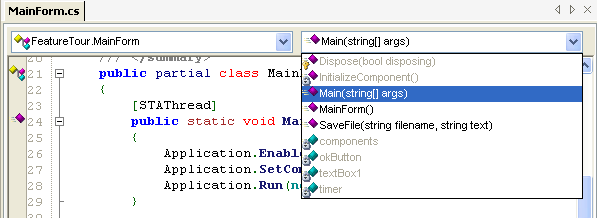
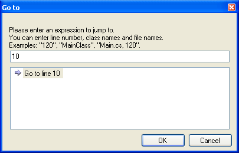
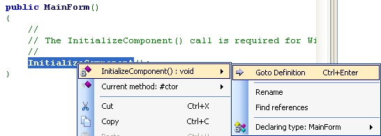
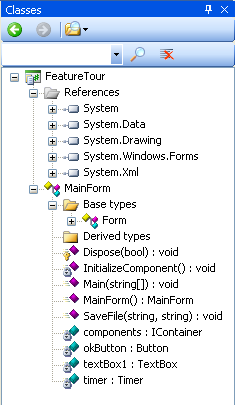
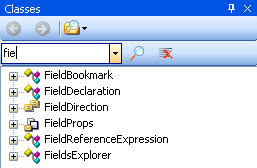
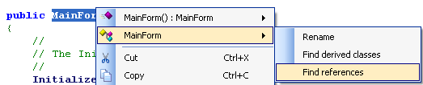
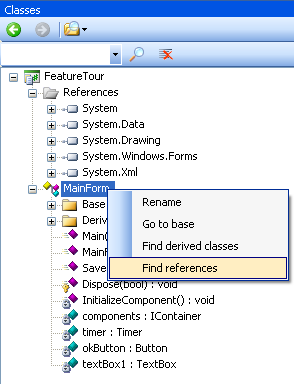
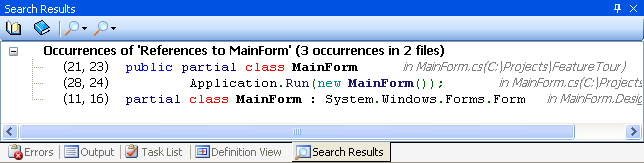

SharpDevelop provides several features that help you quickly navigate to different parts of your code.
At the top of the text editor is the Quick Class Browser.

On the left is a list of the types defined in the currently open source file. On the right is a list of all the members (methods, properties, fields and events) of the selected type. Selecting a list item will cause the text editor to jump to the corresponding code.
From the Search menu select Goto Line Number....
This opens the Go to Line dialog box.

You can type in a line number, class name or filename and then click the OK button to jump to it.
In your code select a method call, an object or a variable, right click it, select the name of the object and then Goto Definition, or alternatively use the keyboard shortcut Ctrl+Enter, and the text editor will jump to the definition.

From the View menu select Classes.

The Class View window is then displayed.

The Class View shows you all the types defined in your project and allows you to quickly navigate to the code of a particular type or type member. To jump to a class member simply double click it in the Class View.
If you have a project containing a lot of types you can search for a particular type using the Class View search text box. As you type into the search text box the Class View updates to show only those types that match.

You can find all references to a particular type or type member by right clicking it in the text editor, selecting its name and then selecting Find references.

This can also be done from the Class View.

The references found are then displayed in the Search Results window. This search is more comprehensive than doing a string search since it will only find references to the type and not strings that happen to have the same name.

From the Search Results window, double click a search result entry to jump to the corresponding code in the text editor.